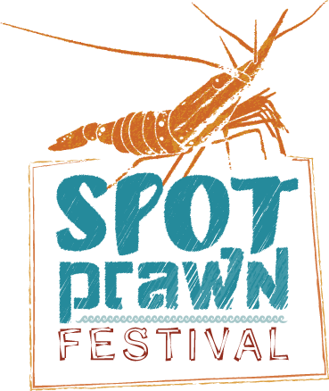

Pacific Prawn Fishermen’s Association
Our focus has always been on the continuing sustainability of the BC prawn fishery.
News
November, 2016
- 2016 PPFA AGM - November 5,2016. 11:30am—4:30pm
The Annual General Meeting of the Pacific Prawn Fishermen’s Association.
Nanaimo Best Western Dorchester
April, 2016
- 
- Spot Prawn Festival - May 15, 2016
Each year at the Spot Prawn Festival, Chefs’ Table Society member chefs from across the Lower Mainland serve you fresh-from-the-boat spot prawns.
False Creek Fisherman's Wharf
1505 West 1st Avenue, Vancouver, BC
- Spot Prawn GALA - May 13 at 6:30pm
The Spot Prawn Festival celebrates its 10th anniversary with a GALA! To celebrate ten successful years, chefs from across Canada will gather at the Vancouver Club on May 13 at 6:30pm (cocktails and canapes) for this black tie optional event.
Chefs Angus An (Vancouver), Ned Bell (Vancouver), Matthias Fong (Calgary), Anthony Walsh (Toronto), Bill Jones.
- Cooking classes at the Pacific Institute of Culinary Arts (PICA)- May 14
In celebration of the 10th anniversary, the Chefs’ Table Society and the Pacific Institute of Culinary Arts have joined forces and are offering a unique cooking class! Join us at the Pacific Institute of Culinary Arts for a 1-hour cooking class revealing the secrets how to purchase, store, prepare and cook spot prawns.
March, 2016
- 2016 Season Start-Up
It’s that time of year again when the Association begins preparations for the 2016 season. Most of the effort is focused on determining the costs associated with compliance of conditions of license. The service provider for the 2016 season will again be J.O. Thomas & Associates Ltd. Some things have changed and many remain the same. The season begins at 12:00 noon, May 12, 2016. Fishers are encouraged to familiarize themselves with closures – especially Sponge Reef and RCA closures – and NOLS timeline requirements. Remember that VMS is mandatory. More information will be available through the Pre-Season Mail out which is expected to be in the mail April 4, 2016 or by contacting J.O. Thomas & Associates Ltd at 604.291.6340. If your contact information has changed in any way – especially your mailing address – be sure to advise DFO and Emily Orr of the changes.
- Spot Prawn Festivals
Summer is the time for Spot Prawn Festivals! The Association will be supporting the 10th Annual Spot Prawn Festival, run by the Chef's Table Society, in Vancouver. Stay tuned for further details! If you or your organization is considering a Spot Prawn Festival, we want to hear from you. We may be able to provide some financial support to your organization.
- Integrated Fisheries Management Plan
The Association’s response to the 2016 IFMP was submitted to DFO today. Our response included comments with respect to buoy numbering systems which make it easier to tell which way strings are laid out. We also expressed disappointment with the VMS hail frequency. We had advocated for a change from 4 times per hour to 2 times per hour. DFO’s unwillingness to change relates to the perceived benefits relating to enforcement response time. We also questioned the purpose and scope of the ‘scientific experiment’ identified in Section 1.2 of the Commercial Harvest Plan Changes for 2016 Members interested in reading more should contact Emily Orr or Steven Richards.
January, 2016
- Protection of marine areas to be based on science, Hunter Tootoo says
Arctic-born fisheries minister says Canada will make good on international agreement on coastal waters
December, 2015
- PRAWN NEWSLETTER 2015
- Wild fisheries on the Pacific coast are export-driven, exporting about 80% of production into a global seafood market. In 2014, the Gross Domestic Product (GDP) of all Wild and Aquaculture Seafood harvested and processed in BC was $950 million and generated 10,900 person years of employment. Approximately 2/3 of these numbers comes from the Wild Seafood sub-sector.
The AGM was held November 23. Members in attendance reviewed current year’s activities and discussed issues for the coming year.
2015 Annual report >>
May, 2015 - Spot Prawn Festival :
- Spot Prawn Boil: The main event of the Vancouver Spot Prawn Festival is Canada's largest Spot Prawn Boil, a chance to enjoy fresh-off-the-boat boiled spot prawns, plus sides, sauces and bread from Terra Breads, and a sample tasting of B.C. wine or beer.
- Vancouver Celebrity Chef Cooking Demos: To inspire your own spot prawn recipes, Vancouver's top chefs will be doing live cooking demonstrations (and offering tastings).
- Buy Your Own B.C. Spot Prawns: Get your own spot prawns direct from fishermen. Spot prawns will continue to be sold for 6 - 8 weeks post-festival at the same False Creek Fisherman's Wharf.
History of the Vancouver Spot Prawn Festival
Sweet and succulent, B.C. spot prawns are a sustainable seafood (they've earned the Vancouver Aquarium's Ocean Wise seal of approval) and a great way to eat local. Yet until 2005, B.C. spot prawns were exported to Japan almost exclusively. That changed when Steve Johansen of Organic Ocean teamed up with Chef Robert Clark to create the first B.C. Spot Prawn Festival in 2006 as a way to keep B.C. spot prawns local. Since then, spot prawns have become a beloved local, seasonal food in Vancouver, and the annual Vancouver Spot Prawn Festival, organized by the Chef's Table Society, has grown into a must-visit event.